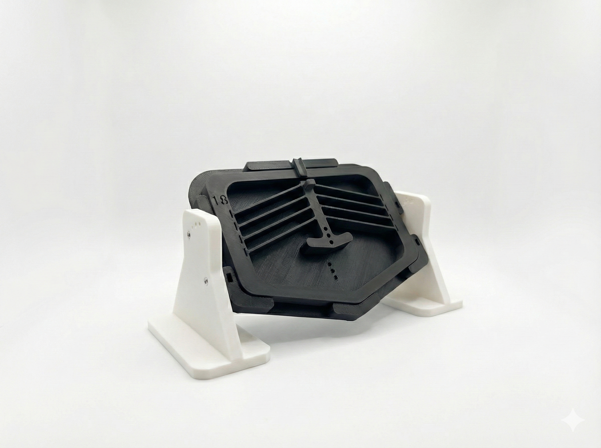
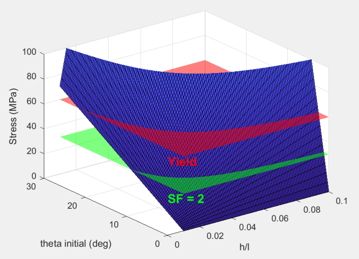
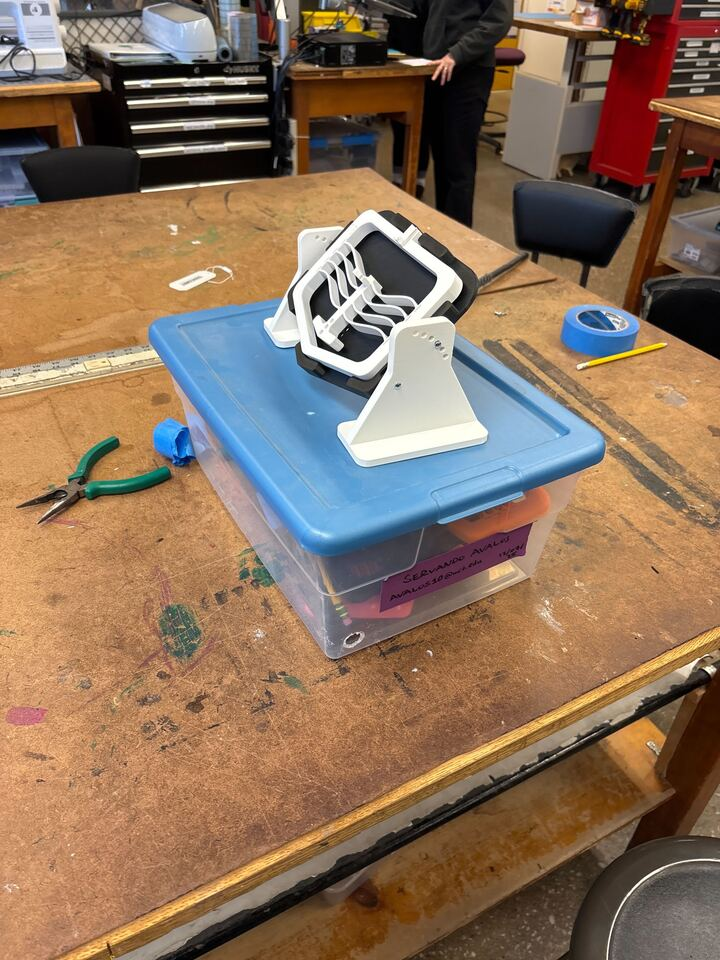
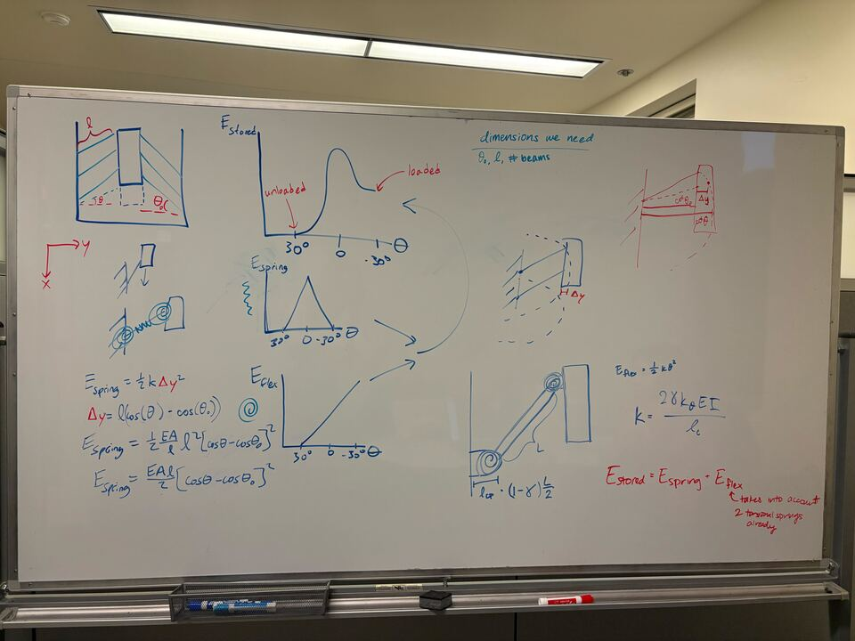

selected project
Pencil Launcher
Mechanism design — A small mechanical system built around stored energy, motion, and repeatable actuation.

The Challenge
You are charged with engineering and fabricating a
bistable mechanism-based launcher that:
(i) can repeatedly be used to launch a pencil
(ii) is integrated into a ‘cross bow’ launcher you design
(iii) launches non-sharpened pencils with eraser first
(iv) maximizes the horizontal range
(v) minimizes spread in 5 successive strikes
The Design
The Process



Reflection
5/5 mechanisms. And the end of the class. Getting this right was really difficult for our team. We had problems achieving bistability in the first place. And then we had a lot of issues with actuation force. We hit about 15 printed iterations before we were even close to the range we needed. In total, we printed 18 different launchers, and ended up submitting iteration 17. This was probably the most I've ever iterated on a project, my second and last all nighter at MIT, and I learned so much. Thanks Marty :)
← Return to My Projects